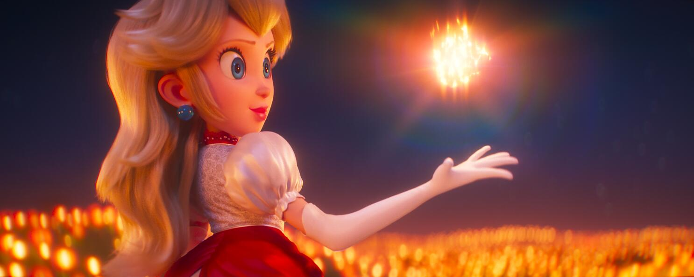

Princess Peach
Description
Princess Peach
is an iconic character in The Super Mario Bros. Movie.
She's a grace and charm female and a kind ruler of the Mushroom
Kingdom, shining and brave even in the face of adversity.

Reasons
- Kindmess: She believes in the goodness of others. In a world filled with chaos,
she uses her compassion to bring people together, showing that empathy can be
a strong strength.
- Bravery and Fierce: When situation gets tough, Princess Peace gets tougher.
She doesn't wait around to be rescued. She's right there on the front lines,
facing challenges. She shows us that we as females can take charge of our own
destinies.
- Collaboration: Princess Peach knows the value of collaboration. Her partnership
with Mario and Luigi is a testment to the power of teamwork.
More Information
For more details about Princess Peach's role in "The Super Mario Bros. Movie", check out
the official site
for an in-depth look at her character and the story.